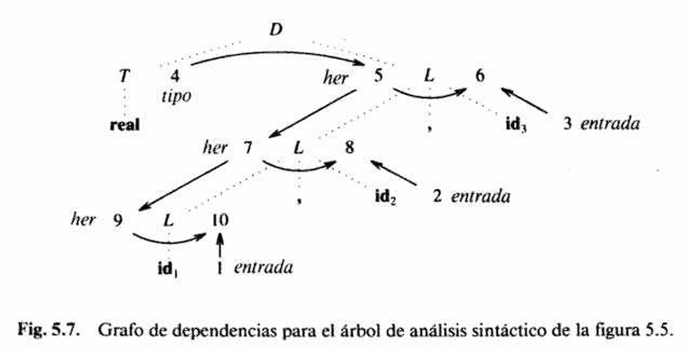
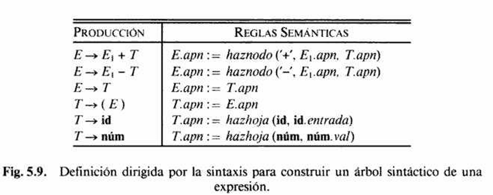
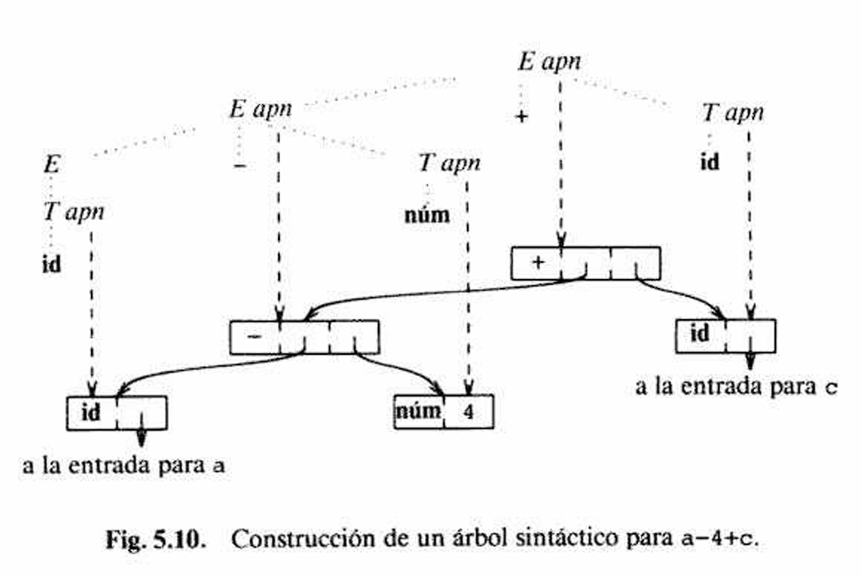
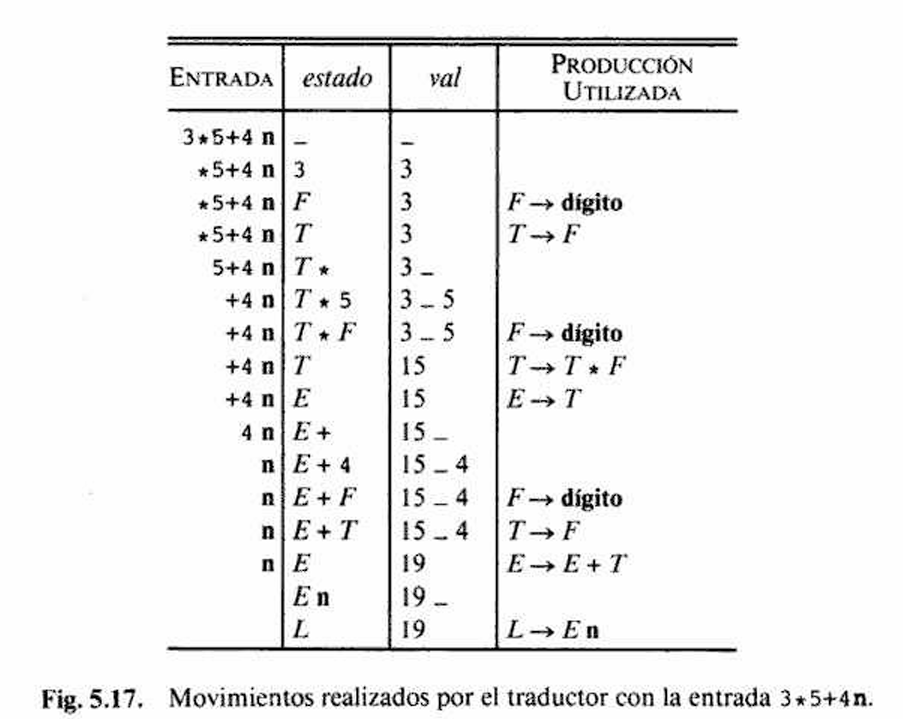
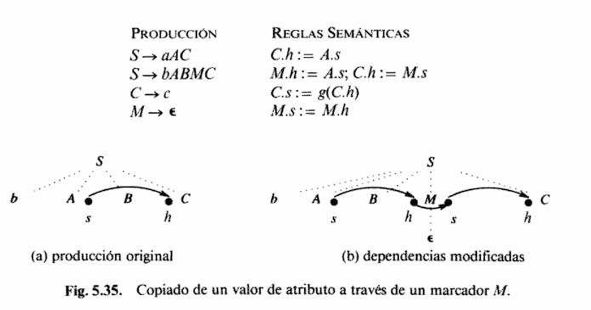
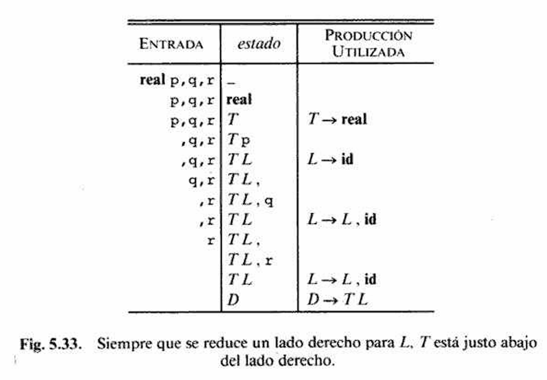

Definiciones dirigidas por la sintaxis
Concepto de DDS, atributos sintetizados y heredados, grafo de dependencias y orden de evaluación.
Compiladores - Capítulo 5
Presentación web en formato de diapositivas
Materia: Compiladores
Basado en el capítulo 5, siguiendo los primeros ocho subcapítulos: desde las definiciones dirigidas por la sintaxis hasta las consideraciones de espacio para atributos.
Integrantes
Organización del capítulo
Concepto de DDS, atributos sintetizados y heredados, grafo de dependencias y orden de evaluación.
Diferencia entre Parse Tree y AST, funciones haznodo/hazhoja y construcción semántica del árbol.
La pila LR como soporte para calcular atributos sintetizados durante cada reducción.
Restricciones L-atribuidas, flujo del contexto y uso de esquemas de traducción.
Adaptación al análisis predictivo, acumuladores heredados y construcción de traductores recursivos.
Uso de marcadores, acciones en epsilon y herencia de contexto sobre la pila LR.
Recorridos sobre un Parse Tree explícito cuando la evaluación ya no depende del orden del parser.
Duración de atributos, reutilización de registros y uso eficiente de memoria intermedia.
Idea previa del capítulo
La materia usa dos notaciones: DDS y esquemas de traducción.
La idea base es pasar de entrada a árbol, dependencias y orden de evaluación.
En una implementación real, las reglas pueden evaluarse durante el análisis sintáctico.
Las DDS especifican atributos, reglas semánticas y dependencias entre valores.
Los esquemas colocan acciones dentro de la gramática y hacen más visible el orden.
5.1
Subcapítulo 5.1
La gramática deja de solo reconocer y pasa a producir significado.
Concepto base
Una definición dirigida por la sintaxis es una generalización de una gramática independiente del contexto en la que cada símbolo gramatical tiene un conjunto de atributos asociado, dividido en atributos sintetizados y heredados.
Idea central: una DDS convierte el Parse Tree en un mecanismo de cálculo y también puede servir para construir directamente un AST.
E -> E + T
E.val := E1.val + T.valLa producción sola reconoce una expresión. La regla semántica además calcula su valor.
En consecuencia, la gramática deja de ser solo un mecanismo de reconocimiento y pasa a describir cómo se obtiene información semántica a partir de la estructura sintáctica.
Las DDS permiten calcular valores, verificar tipos, evaluar atributos sobre el Parse Tree, construir directamente un AST, generar representaciones intermedias y preparar la traducción posterior del programa.
Forma de una DDS
b := f(c1, c2, ..., ck)b es el atributo que queremos calcular y c1...ck son los atributos de los que depende.
No es una asignación cualquiera: es una restricción de orden.
Si E.val depende de E1.val y T.val, esos valores deben existir antes.
Detrás de cada regla hay un grafo de dependencias implícito. El orden de evaluación no se elige libremente; queda impuesto por esas dependencias.
En estas diapositivas iniciales, las reglas semánticas se están definiendo sobre el Parse Tree, no sobre el AST.
Atributos
Se calculan a partir de los hijos. El flujo normal es de abajo hacia arriba.
T.val := digito.valex
E.val := E1.val + T.valConclusión: primero se resuelven las partes elementales y después se compone el resultado global.
Se calculan usando el padre o los hermanos de la izquierda. Llevan contexto.
D -> T L
L.her := T.tipoConclusión: el tipo no nace en la lista; se transmite desde la declaración donde se introduce el contexto.
Aquí los atributos se evalúan sobre nodos del Parse Tree; el AST puede construirse como resultado de esas mismas reglas.
Atributos en el Parse Tree
Las figuras muestran la diferencia central: los sintetizados suben desde los hijos, mientras que los heredados transmiten contexto desde el padre o desde la izquierda.

Fig. 5.2: cada regla calcula el atributo val usando valores ya disponibles en sus hijos.

Fig. 5.3: el valor final aparece arriba porque primero se calculan los valores de las hojas y subexpresiones.

Fig. 5.4: L.her recibe el tipo de T.tipo y lo usa para anotar cada identificador.

Fig. 5.5: el contexto real se copia hacia los nodos de la lista antes de registrar los identificadores.
Estas figuras trabajan sobre el Parse Tree: los atributos se escriben sobre sus nodos para mostrar qué valor depende de cuál.
Dependencias y evaluación
Cada nodo representa un atributo y cada arista indica que un valor depende de otro.
X -> Y significa que Y solo puede evaluarse después de X.Se usa un orden topológico: primero los nodos sin dependencias pendientes y después los demás.
El orden no es arbitrario: está completamente impuesto por las aristas del grafo.
Si A depende de B y B depende de A, la DDS introduce una dependencia circular y no hay forma correcta de evaluarla.
En ese caso no existe orden topológico posible: cualquier intento de evaluar uno de los dos atributos exige que el otro ya haya sido calculado.
El grafo de dependencias se construye a partir de los atributos asociados al Parse Tree anotado.
Grafos de dependencias
b := f(c1, ..., ck).ci hacia b.Si una regla semántica solo invoca un procedimiento, se introduce un falso atributo sintetizado para poder representarla también dentro del mismo grafo.
Esto evita dejar fuera del análisis acciones importantes como imprimir, añadir tipos a la tabla de símbolos o construir estructuras auxiliares.

Fig. 5.7. Grafo de dependencias para el árbol del ejemplo con L.her y falsos atributos.
Una vez construido el grafo, ya no solo sabemos qué atributos existen: también sabemos en qué secuencia deben evaluarse y qué reglas semánticas quedarían bloqueadas si apareciera un ciclo.
En el caso de declaraciones, la arista T.tipo -> L.her muestra que el tipo sintetizado en
el nodo de T debe existir antes de propagar el contexto hacia la lista de identificadores.
Seguimos trabajando sobre el Parse Tree; el grafo no reemplaza al Parse Tree, solo explicita dependencias entre sus atributos.
5.2
Subcapítulo 5.2
Aquí distinguimos Parse Tree y AST para explicar cómo una DDS construye estructuras útiles.
Parse Tree vs AST
El Parse Tree o árbol de análisis sintáctico representa exactamente cómo la cadena de entrada se deriva a partir de la gramática.
Conserva todos los no terminales, terminales y niveles intermedios usados por el parser para justificar la estructura gramatical de la entrada.
El AST o árbol sintáctico abstracto conserva solo la estructura semánticamente relevante de la construcción.
Elimina detalle gramatical accesorio y deja una forma más compacta, más cercana a las fases de chequeo semántico, optimización y generación de código.
| Aspecto | Parse Tree | AST |
|---|---|---|
| Nivel de detalle | Muy detallado: refleja la derivación gramatical completa. | Reducido: conserva solo operadores, operandos y estructura semántica. |
| Relación con la gramática | Directa: depende de las producciones concretas de la gramática. | Más abstracta: no necesita reflejar cada no terminal auxiliar. |
| Uso en compiladores | Sirve para validar y para evaluar atributos definidos sobre la derivación. | Sirve como representación intermedia para análisis semántico y código. |
| Tamaño y estructura | Suele ser más grande y contener muchos nodos estructurales. | Suele ser más pequeño y compacto. |
Mismo ejemplo
a + b * cE
├─ E
│ └─ T
│ └─ id(a)
├─ +
└─ T
├─ T
│ └─ id(b)
├─ *
└─ F
└─ id(c)
El parser construye este árbol porque sigue literalmente la gramática y conserva cada nivel sintáctico necesario para justificar la derivación.
+
/ \
a *
/ \
b c
El AST elimina los nodos intermedios de la gramática y deja solo la estructura semántica relevante: la suma cuyo operando derecho es una multiplicación.
E -> E1 + T
E.nodo = new Nodo("+", E1.nodo, T.nodo)El parser puede construir el Parse Tree y una DDS puede evaluar atributos sobre ese Parse Tree o construir directamente el AST.
AST
El árbol de análisis sintáctico conserva demasiado detalle gramatical para usarlo directamente como representación intermedia.
En expresiones, eso significa que aparecen muchos no terminales auxiliares y nodos que sirven para justificar la derivación, pero no para traducir ni optimizar.
Por eso se construye un AST más compacto, donde los operadores quedan como nodos internos y los operandos como hijos.
Permite separar la traducción del análisis sintáctico: primero el parser reconoce la entrada y después el compilador trabaja sobre una estructura más limpia.
Eso es importante porque una gramática adecuada para parsear no siempre coincide con la estructura conceptual más cómoda para traducir.
Conclusión: el AST conserva la estructura realmente útil para chequeo semántico, optimización y generación de código.
En este bloque el foco ya no es el Parse Tree, sino el AST como representación semántica compacta.
Ejemplo de construcción
haznodo y hazhoja
La DDS del libro usa haznodo y hazhoja para construir el árbol sintáctico de expresiones.
a - 4 + c
El atributo apn va quedando asociado a la raíz del subárbol construido en cada paso.
hazhoja(...) crea los nodos terminales, por ejemplo para id o num.
haznodo(op, izquierda, derecha) crea un nodo interno para el operador y enlaza los subárboles ya construidos.
La idea clave es que la regla semántica devuelve un puntero al nodo recién creado, no solo un valor numérico o un tipo.
DDS para AST
apnapn
Un atributo sintetizado como apn puede guardar el apuntador al nodo del AST
sintáctico construido para la subexpresión reconocida.
Eso permite que cada producción devuelva no un valor numérico, sino la raíz del fragmento de árbol que acaba de crear.
En otras palabras, cada no terminal va quedando asociado a un apuntador que representa su subárbol dentro del AST.
id o num, se crea una hoja con hazhoja(...).apn para que el no terminal devuelva su propio subárbol.apn de los hijos y se crea un nodo interno con haznodo(...).apn y pasa a representar toda la subexpresión.E -> E1 + T
E.nodo = new Nodo("+", E1.nodo, T.nodo)Cuando se usa la producción E -> E1 + T, la acción semántica construye un nodo + cuyos hijos son justamente los árboles ya construidos para E1 y T.
La idea formal es siempre la misma: si los hijos ya tienen asociado un apuntador, la producción actual crea el nodo del operador y devuelve su dirección como atributo sintetizado.
AST y GDA
En un árbol sintáctico común, una subexpresión repetida aparece duplicada tantas veces como se use.
En un grafo dirigido acíclico o GDA, el compilador puede compartir un mismo nodo entre varios padres cuando la subexpresión es idéntica.
Eso evita repetir estructura y prepara el terreno para detectar subexpresiones comunes, algo clave más adelante en optimización.
Cada nodo se busca o se crea según su signatura: operador más hijos.
La idea de fondo es que el compilador no siempre necesita construir la misma información dos veces si puede compartirla estructuralmente.
En esta parte seguimos sobre la representación semántica: primero como AST y luego como GDA cuando conviene compartir subárboles idénticos.
5.3
Bloque 3
El caso más natural para un parser LR.
Sección 5.3
Cuando se reduce una producción, los atributos necesarios ya están en la pila: el traductor solo los lee, aplica la regla semántica y deja el resultado en el lugar del no terminal reducido.
Pila LR enriquecida
Esquema de pila
| estado | val |
|---|---|
| ... | ... |
| X | X.x |
| Y | Y.y |
| Z | Z.z |
| ... | ... |
Cada entrada de estado apunta a la tabla del analizador LR(1), mientras que
val almacena el atributo sintetizado del símbolo que ocupa esa posición.
Reducción
Producción con regla semántica
A -> X Y Z
A.a := f(X.x, Y.y, Z.z)X.x, Y.y y Z.z están en val[tope - 2], val[tope - 1] y val[tope].val queda sin definir.| pos | estado | val |
|---|---|---|
| tope - 2 | X | X.x |
| tope - 1 | Y | Y.y |
| tope | Z | Z.z |
| pos | estado | val |
|---|---|---|
| tope | A | A.a |
Después de reducir XYZ a A, el tope retrocede dos posiciones:
el estado que cubre a A y su atributo A.a quedan en la nueva cima.
Ejemplo
| Producción | Fragmento de código |
|---|---|
L -> E n |
print(val[tope]) |
E -> E1 + T |
val[tope] := val[tope - 2] + val[tope] |
E -> T |
se conserva val[tope] |
T -> T1 * F |
val[tope] := val[tope - 2] * val[tope] |
T -> F |
se conserva val[tope] |
F -> ( E ) |
val[tope] := val[tope - 1] |
F -> digito |
el token aporta su valor léxico |
3 * 5 + 4 n
En cada reducción, la columna val muestra el valor sintetizado que queda asociado
con el nuevo símbolo de la pila.
5.4
Subcapítulo 5.4
La información heredada puede fluir de izquierda a derecha durante el análisis.
Definición
Cuando la traducción ocurre durante el análisis, los atributos deben evaluarse en el mismo orden en que el parser crea los nodos del árbol de análisis.
Se llaman definiciones por la izquierda porque la información parece fluir de izquierda a derecha: desde el padre o desde símbolos ya procesados hacia los siguientes símbolos.
A -> X1 X2 ... XnUn atributo heredado de Xj solo puede depender de:
X1, X2, ..., Xj-1, los símbolos ubicados a su izquierda.A, el no terminal del lado izquierdo.Toda definición con atributos sintetizados es también una definición con atributos por la izquierda: las restricciones formales afectan a los atributos heredados, no a los sintetizados.
Estas definiciones incluyen todas las DDS basadas en gramáticas LL(1), donde el recorrido predictivo procesa cada producción de izquierda a derecha.
Contraejemplo
| Producción | Reglas semánticas |
|---|---|
A -> L M |
L.i := l(A.i)M.i := m(L.s)A.s := f(M.s) |
A -> Q R |
R.i := r(A.i)Q.i := q(R.s)A.s := f(Q.s) |
En A -> Q R, el atributo heredado Q.i depende de R.s.
Pero R está a la derecha de Q, así que todavía no fue procesado.
Esa regla obliga a mirar hacia el futuro dentro de la producción.
No es una definición con atributos por la izquierda porque un heredado consulta un sintetizado de un símbolo a su derecha.
Un heredado no debe pedir información a un símbolo que todavía no fue reconocido.
La evaluación debe poder hacerse de izquierda a derecha dentro de cada producción.
Esquemas de traducción
Un esquema de traducción es una gramática independiente del contexto en la que:
Son fragmentos de código que se ejecutan durante el análisis sintáctico para realizar tareas concretas: calcular valores, imprimir resultados, construir nodos o registrar información.
E -> E + T { print("+") }La posición de la acción determina cuándo se ejecuta.
La acción debe ubicarse en un punto donde todos los atributos que consulta ya estén disponibles.
Por eso las restricciones de las definiciones con atributos por la izquierda motivan la forma de escribir esquemas de traducción.
El esquema de traducción se activa durante el reconocimiento del Parse Tree, pero sus acciones pueden construir un AST o emitir otra representación.
Ejemplo de esquema
expr -> término resto
resto -> + término { print('+') } resto
resto -> - término { print('-') } resto
resto -> epsilon
término -> 0 { print('0') }
término -> 1 { print('1') }
...
término -> 9 { print('9') }E -> T R
R -> opsuma T { print(opsuma.lexema) } R
R -> epsilon
T -> num { print(num.val) }9 - 5 + 2E
|-- T: print(9)
`-- R
|-- - T: print(5), print(-)
`-- R
|-- + T: print(2), print(+)
`-- epsilonResultado impreso en postfijo: 9 5 - 2 +.
El primer esquema muestra cada símbolo concreto de la gramática. El segundo compacta la misma idea
usando componentes léxicos generales: num para los dígitos y opsuma para
los operadores aditivos.
Las acciones se sincronizan con el Parse Tree, pero el resultado puede ser un valor, un AST, una entrada de tabla de símbolos o código intermedio.
Ubicación de acciones
El caso más sencillo ocurre cuando solo se necesitan atributos sintetizados: se coloca una acción de asignación al final del lado derecho.
T -> T1 * F { T.val := T1.val * F.val }A -> { B.h := f(A.h) } B C: la acción va antes de B porque calcula B.h.
A -> B { accion1 } C: accion1 no puede usar C.s, porque C todavía no fue procesado.
A -> B C { A.s := h(B.s, C.s) }: la acción va al final porque depende de ambos sintetizados.
De DDS a esquema
| Producción | Reglas semánticas |
|---|---|
S -> C |
C.tp := 10S.al := C.al |
C -> C1 C2 |
C1.tp := C.tpC2.tp := C.tpC.al := max(C1.al, C2.al) |
C -> C1 sub C2 |
C1.tp := C.tpC2.tp := contrae(C.tp)C.al := desp(C1.al, C2.al) |
C -> texto |
C.al := texto.a * C.tp |
S -> { C.tp := 10 } C { S.al := C.al }
C -> { C1.tp := C.tp } C1
{ C2.tp := C.tp } C2
{ C.al := max(C1.al, C2.al) }
C -> { C1.tp := C.tp } C1 sub
{ C2.tp := contrae(C.tp) } C2
{ C.al := desp(C1.al, C2.al) }
C -> texto { C.al := texto.a * C.tp }5.5
Subcapítulo 5.5
Cómo adaptar la semántica a parsers predictivos.
LL y recursión
Muchas gramáticas de expresiones son naturalmente recursivas por la izquierda, pero un parser predictivo no puede manejarlas directamente.
Al eliminar esa recursión, también hay que reubicar la información heredada y sintetizada que antes viajaba por la forma original de la producción.
Se transforma la gramática y también el esquema de traducción para conservar el mismo resultado semántico.
El objetivo es que el nuevo esquema produzca exactamente el mismo significado que la definición original, aunque el parser procese la entrada con otra estructura.
No solo cambia la forma sintáctica; hay que preservar el orden correcto de las acciones.
Antes
E -> E + T | TLa recursión aparece al inicio de la producción y por eso el parser predictivo entraría en un ciclo inmediato.
Después
E -> T R
R -> + T R | epsilonLa recursión se desplaza a un no terminal auxiliar que ya no impide el análisis descendente.
Conservación semántica
Acumulador heredado
E -> T R
R.in = T.val
R -> + T R1
R1.in = R.in + T.val
R -> epsilon
R.syn = R.inT calcula el primer valor.R.in lo recibe como acumulador parcial.epsilon, el resultado sintetizado final coincide con el acumulado.Eliminar recursión por la izquierda no es solo una técnica sintáctica: obliga a redistribuir la información semántica para que el nuevo recorrido produzca exactamente el mismo resultado que el original.
Traductor predictivo
Cada no terminal se vuelve una función. Sus parámetros representan atributos heredados y su retorno representa atributos sintetizados.
Además, los atributos léxicos del token reconocido se guardan en variables y luego se usan dentro de las funciones correspondientes.
La firma de la función ya anticipa qué contexto entra y qué resultado sale.
Esqueleto del traductor
E() {
T();
R(h);
}La traducción se va haciendo mientras se recorre el Parse Tree de arriba hacia abajo.
Para construir el traductor predictivo se transforman los heredados en parámetros, los sintetizados en valores de retorno y las acciones semánticas se ubican en el punto exacto donde sus dependencias ya existen.
En una implementación real, también se comprueban tokens esperados, se consumen lexemas del scanner y se actualizan estructuras auxiliares como la tabla de símbolos o el AST en construcción.
En descenso recursivo, el recorrido sigue el Parse Tree; durante ese recorrido la DDS puede construir un AST.
5.6
Subcapítulo 5.6
El caso difícil: LR no ve tan fácilmente el contexto del padre.
Heredados en LR
En análisis ascendente, cuando se necesita un heredado, todavía puede no existir el nodo padre de forma explícita.
Eso impide pasar contexto del modo natural en que lo haría una evaluación top-down.

El marcador M permite copiar el valor heredado a una posición controlada de la derivación.
Los sintetizados son naturales en LR; los heredados requieren ingeniería extra para recrear el contexto que aún no está armado.
Para lograrlo, primero se eliminan las acciones intercaladas introduciendo no terminales marcadores
que derivan epsilon y permiten disparar las acciones en un punto controlado.
Luego el contexto heredado se lee y se escribe sobre la pila: una reducción previa deja listo el valor que una producción posterior necesitará como heredado.
Todo este bloque sigue tratando atributos del Parse Tree; el problema aquí es cómo simular el contexto del padre en un parser LR.
Interpretación de la pila
epsilon, así que no cambia la cadena reconocida.
La pila revela por qué T queda accesible justo debajo del lado derecho cuando se reduce un caso de L.
El Parse Tree reconocido no cambia en esencia; lo que cambia es la estrategia usada para disparar las acciones semánticas en el momento oportuno.
5.7
Subcapítulo 5.7
Si el Parse Tree o el AST ya existe explícitamente, se puede recorrer en el orden que convenga.
Evaluadores recursivos
El evaluador trabaja sobre un Parse Tree explícito; si ya existe un AST, la misma idea puede aplicarse sobre esa estructura.
Recorridos de izquierda a derecha
A(n, heredados_de_A) -> sintetizados_de_A
La función de un no terminal A toma un nodo n y los valores heredados de
A; devuelve los atributos sintetizados de A.
En vez de elegir producción con lookahead, usa un case sobre la producción almacenada en el nodo.
Ejemplo
| Producción | Reglas semánticas |
|---|---|
S -> C |
C.tp := 10S.al := C.al |
C -> C1 C2 |
C1.tp := C.tpC2.tp := C.tpC.al := max(C1.al, C2.al) |
C -> C1 sub C2 |
C1.tp := C.tpC2.tp := contrae(C.tp)C.al := desp(C1.al, C2.al) |
C -> texto |
C.al := texto.a * C.tp |
Cfunction C(n, tp)
case produccion(n) of
C -> C1 C2:
al1 := C(hijo(n, 1), tp)
al2 := C(hijo(n, 2), tp)
return max(al1, al2)
C -> C1 sub C2:
al1 := C(hijo(n, 1), tp)
al2 := C(hijo(n, 3), contrae(tp))
return desp(al1, al2)
C -> texto:
return tp * texto.a
endLectura del ejemplo
La función C toma como argumentos un nodo n y un valor que corresponde
a C.tp en ese nodo.
Como resultado devuelve el valor correspondiente a C.al.
El atributo heredado entra como parámetro; el sintetizado sale como valor de retorno.
La función tiene un caso por cada producción con C a la izquierda.
El código de cada caso reproduce las reglas semánticas asociadas con esa producción.
El orden debe garantizar que los atributos heredados de un no terminal se calculen antes de llamar a la función correspondiente.
El evaluador ya no consume tokens. Lee la producción guardada en el nodo del árbol y elige el caso recursivo que debe ejecutar.
Otros recorridos
| Producción | Reglas semánticas |
|---|---|
A -> L M |
L.h := l(A.h)M.h := m(L.s)A.s := f(M.s) |
A -> Q R |
R.h := r(A.h)Q.h := q(R.s)A.s := f(Q.s) |
En A -> Q R, Q.h depende de R.s, por eso hace falta visitar
primero el subárbol derecho.
A -> L M
A -> Q R

A.Función para otros recorridos
function A(n, ah)
case produccion(n) of
A -> L M:
lh := l(ah)
ls := L(hijo(n, 1), lh)
mh := m(ls)
ms := M(hijo(n, 2), mh)
return f(ms)
A -> Q R:
rh := r(ah)
rs := R(hijo(n, 2), rh)
qh := q(rs)
qs := Q(hijo(n, 1), qh)
return f(qs)
endA tiene un atributo heredado h y uno sintetizado s.
Las reglas asociadas con A -> L M imponen dependencias de izquierda a derecha.
Las reglas asociadas con A -> Q R imponen dependencias de derecha a izquierda.
Por eso la función para A visita L antes que M en un caso,
y R antes que Q en el otro.
5.8
Subcapítulo 5.8
Los atributos también cuestan memoria, no solo tiempo.
Memoria
Empieza cuando se calcula y termina cuando ya fueron evaluados todos los valores que dependen de él.
Con el grafo de dependencias se puede estimar cuántos registros o espacios temporales hacen falta.
Las reglas de copia b := c permiten reutilizar registros y evitar copias innecesarias.
Tratar las copias como caso especial reduce todavía más el consumo de registros y evita movimientos de datos que no aportan nada al cálculo semántico.
El compilador no guarda todo para siempre; recicla espacio en cuanto la dependencia termina.
Recorrer los nodos del grafo en el orden de evaluación permite usar el menor número posible de registros temporales durante la compilación.
El problema ya no es solo calcular bien, sino calcular bien usando la menor cantidad posible de memoria intermedia.
Estas duraciones se calculan para atributos asociados al Parse Tree o a su grafo de dependencias derivado.
Ejemplo de reutilización
| Etapa | Atributos vivos | Registros ocupados |
|---|---|---|
| 1 | a.val, b.val |
R1, R2 |
| 2 | t1 = a + b |
R1 reutilizado, R2 libre |
| 3 | c.val, t1 |
R2 vuelve a usarse para c |
Analizar la duración de los atributos equivale a hacer administración de recursos: el compilador decide cuándo reservar, reutilizar y liberar memoria temporal mientras evalúa la semántica.
Resumen
El capítulo 5 muestra cómo pasar del Parse Tree a resultados reales: valores, tipos, un AST, otras estructuras intermedias o código. En otras palabras, enseña cómo un parser deja de solo aceptar cadenas y empieza a traducir programas.
Desde allí se entiende por qué la semántica no es un agregado opcional, sino la parte que convierte el análisis sintáctico en una fase verdaderamente útil dentro del compilador.
Bibliografía
Aho, Alfred V.; Lam, Monica S.; Sethi, Ravi; Ullman, Jeffrey D. Compiladores: Principios, técnicas y herramientas.
Fuente principal utilizada para esta versión: Capítulo 5, subcapítulos 5.1 a 5.8.
Capítulo 5 recortado en PDF.
Archivo de trabajo usado como base directa para organizar contenido, ejemplos y subtítulos.